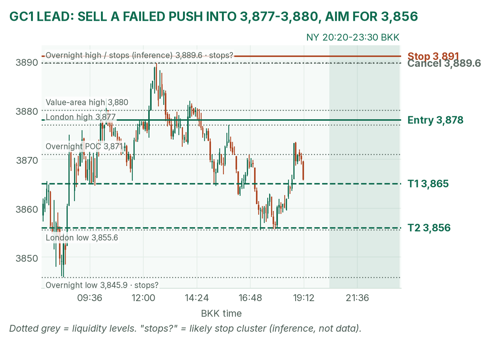
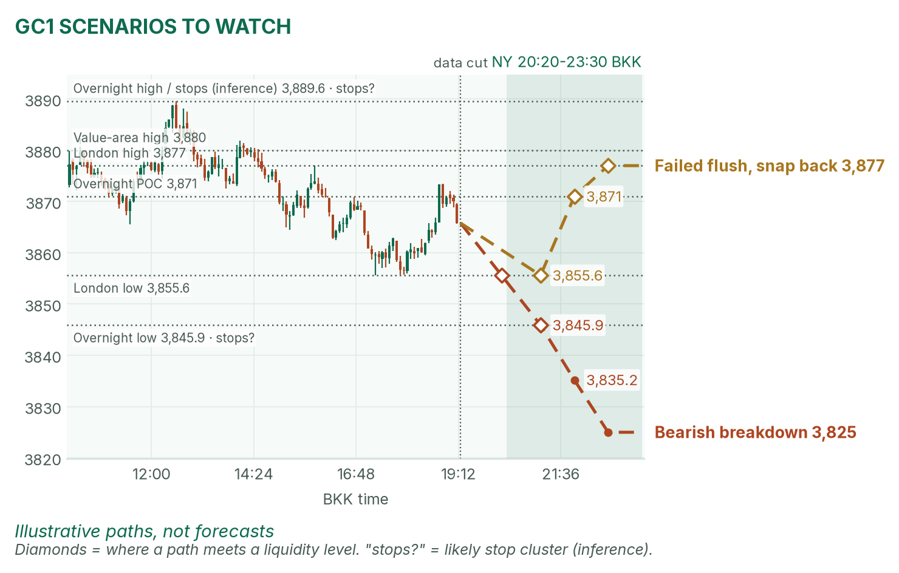
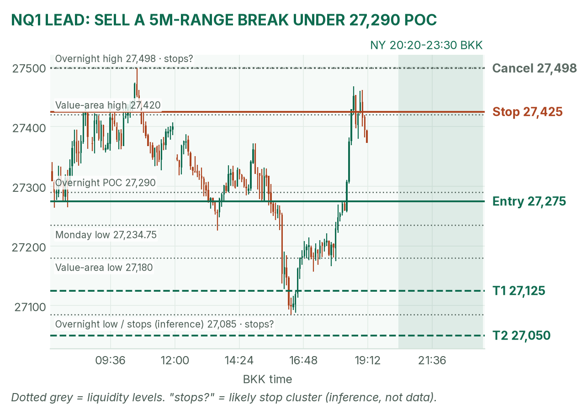
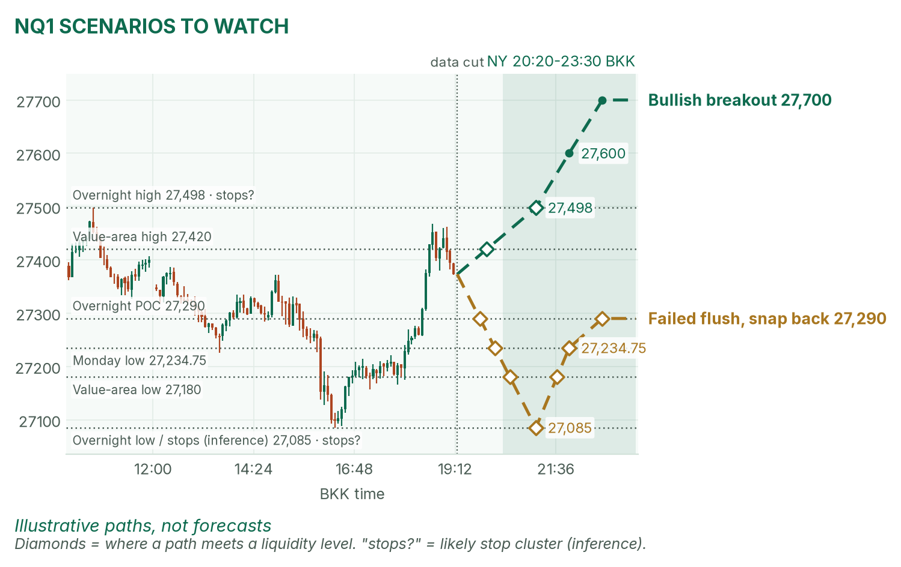

Parked until Nvidia. Sell gold's failed push, sell Nasdaq only on a break.
Window 20:20–23:30 BKK (US winter time). Data cut 19:15 BKK: GC 3,865.8, NQ 27,373.00 (completed 5-minute bars). Backup data: TopstepX login failed again, so levels come from Yahoo Finance Dec futures bars (slightly delayed). Levels only, flat by 23:30. Ideas, not advice. April's pre-NY brief (~18:45 BKK) was read.
Summary
GC: sell a failed push into 3,877–3,880, entry 3,878, stop 3,891, targets 3,865 and 3,856. About 33% once filled; it leans with the firm dollar.
NQ: sell a 5-minute-range break under 27,290, entry 27,275, stop 27,425, targets 27,125 and 27,050. About 33%; only after 21:35.
No-trade zones: 20:25–20:32 (retail sales, the decider), 21:05–21:12 (Waller), 21:10–21:17 (industrial production), 21:25–21:32 (Hammack, stock open), 21:55–22:02 (NAHB). Nvidia reports after we are flat.
The market story
Traders treat a December Fed hike as a certainty, and the dollar sits near a 19-month high (April, CME FedWatch via CNBC). The 10-year yield is 5.123%. That caps gold: it bounced to 3,889.6 in Asia, then gave it all back to the 3,871 POC (the busiest overnight price).
Nasdaq fell hard Monday (28,279.25 down to 27,234.75), dipped to 27,085.00 in London, and recovered to its POC. Everyone waits for Nvidia after the US close. My bias: gold soft inside its range, Nasdaq neutral to down. Retail sales at 20:30 picks the direction for the window.
News (BKK)
Time
Event
Forecast
Prior
Read
19:30
Fed's Musalem
–
–
Before the window.
20:30
US retail sales (Oct, m/m) + import prices
+0.2% (core +0.4%)
+0.8%
Hot: yields and dollar up, gold and NQ lower. Cold: hike bets ease, gold retests 3,889.6.
21:10
Fed's Waller
–
–
Can move rates fast.
21:15
Industrial production
–
–
Second-tier.
21:30
Fed's Hammack; US stocks open
–
–
NQ's 5-minute range forms.
22:00
NAHB homebuilder index
29
29
Minor.
No whisper number found; past move sizes not measured this run. Source: April's brief (XTB, MarketWatch).
Levels to watch
Level
GC
NQ
Monday settle (April)
3,853.0
27,284.25
Monday high / low
3,904.3 / 3,835.2
28,279.25 / 27,234.75
Overnight high (since 06:00)
3,889.6
27,498.00
London high / low (since 15:00)
3,877.0 / 3,855.6
27,467.75 / 27,085.00
Overnight POC
3,871
27,290
Overnight value area
3,856–3,880
27,180–27,420
Overnight low
3,845.9
27,085.00
Expected NY range (3-session median)
about 39 points
about 640 points
Gold (GC1)
Bias: soft, range-bound. Gold sits in a 3,856–3,880 value area (where 70% of volume traded). The NY rule fades the 20:20 COMEX range back toward the POC.
The trade: sell the failed push
Entry
3,877–3,880 (plan 3,878), after 20:32, only if a push into the London high stalls
Stop
3,891, above the 3,889.6 overnight high
Targets
1R partial 3,865 · T2 3,856 (1.7R), the value-area low
Cancel
A 5m close above 3,889.6 before the fill, a trade at 3,856 first, or no fill by 22:30
Probability
~33%, an estimate. Basis: GC NY opening ranges mostly failed and reverted in my 42-session study (not significant); the firm dollar helps a short.
A cold retail print that drives gold through 3,889.6 kills the idea; no short then. April agrees: a strong print "would firm up hike bets and pressure gold," and the base case is the 3,845.9–3,889.6 range holding.

GC 5-minute bars into 19:15. The Asia pop to 3,889.6 was sold back into value.

Illustrative paths, not forecasts.
Scenarios to watch
Bearish breakdown: a hot print and a 5m close below 3,845.9. Aims for Monday's 3,835.2 low, then 3,825.
Mean reversion: a dip under 3,855.6 that closes back above it. Aims for the 3,871 POC, then 3,877.
Nasdaq (NQ1)
Bias: neutral to down. NQ is back on its 27,290 POC, mid-range. The NY rule: trade breakouts of the 21:30–21:35 range. After about 22:00, stay short only below VWAP (the volume-weighted average price).
The trade: bearish range breakdown
Entry
Sell stop 27,275, under the POC, after 21:35, only if the 21:30–21:35 range low is above it
Stop
27,425, above the 27,420 value-area high
Targets
1R partial 27,125 · T2 27,050 (1.5R), under the 27,085 low
Cancel
Trades above 27,498 before entry, or no break by 22:30
Probability
~33%, an estimate. Basis: NQ 5-minute breakouts averaged +0.37R over 31 sessions (not significant); a pre-Nvidia range day shades it down.
Why: buyers' stops likely sit under 27,085 (my inference). If NQ flushes 27,085 and closes back above it, the short is done; don't chase. April partly agrees: strong data means "watch NQ 27,085.00 for breaks lower," but she calls the market "parked until Nvidia."

NQ 5-minute bars into 19:15. The London flush to 27,085 was bought back to the POC.

Illustrative paths, not forecasts.
Scenarios to watch
Bullish breakout: a 5m close above 27,498. Aims for 27,600, then 27,700.
Mean reversion: a flush under 27,085 that closes back above it. Aims for 27,234.75, then the 27,290 POC.
6E (not traded): 1.1004, near its 1.0997 low.
Before you click
ORB bases. GC NY: 20:20 COMEX open until a 2-minute candle's volume drops below half the first two's average, fade to POC. NQ NY: 21:30–21:35 range, trade breakouts. GC and 6E London: 15:00–15:30 range (fade gold, break the euro).
Checklist. 1) Room to today's max loss? 2) Within daily rules? 3) No release within 30 minutes? 4) Agrees with the bias? 5) At a marked level? 6) Setup tagged? 7) Entry, stop, 1R partial, target set? 8) Calm, not chasing?
Reset (60 seconds). Hands off the mouse. Breathe in 4, hold 4, out 6, five times. Name the feeling in one word. "Eager" or "frustrated"? Wait 5 minutes.